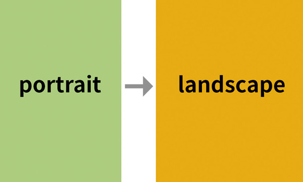
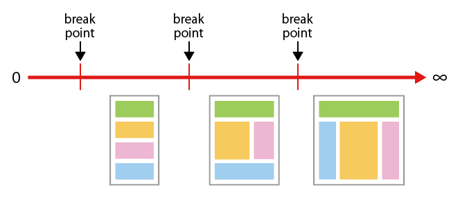

レスポンシブWebデザイン
- レスポンシブWebデザインとは、ブラウザーのウィンドウ幅に合わせてCSSでWebページのレイアウトを変更する手法のこと
- 技術的には
- Fluid Grid（フルードグリッド）
- Fluid Image（フルードイメージ）
- Media Queries（メディアクエリ）
という3つのテクニックを用いて実現する
レスポンシブWebデザインの基本設定
ビューポート
デバイスの画面解像度に設定したビューポート
- ビューポートの幅は、以下の記述で指定できます
<meta name="viewport" content="パラメータ値">
| 設定 | パラメータ | 指定できる値 |
|---|---|---|
ビューポートの横幅 |
width | 数値(ピクセル)/device-width |
| ビューポートの高さ | height | 数値(ピクセル)/device-height |
| ページの拡大率 | initial-scale | 拡大率 |
| 拡大率の最小値 | minimum-scale | 拡大率 |
| 拡大率の最大値 | maximum-scale | 拡大率 |
| ユーザーによる拡大・縮小の可否 | user-scalable | yes/no |
| ターゲットdensity | target-densitydpi | 数値(dpi)/device-dpi/low-dpi/ medium-dpi/high-dpi |
ビューポートの横幅指定
- 何も設定をしないとデフォルトの「980px」に設定されます
- 「meta name="viewport"」を追加する
- 「content="width=device-width"」を指定する
<!DOCTYPE html> <html lang="ja"> <head> <meta charset="UTF-8"> <meta name="viewport" content="width=device-width"> <title>ビューポートの横幅指定</title> </head> <body> </body> </html>
もしページロード時の初期の縮小をコントロールしたければ、initial-scaleの指定を利用できます。
例えば、下記の記載ではページロード後の自動拡縮を行いません。
<meta name="viewport" content="width=device-width, initial-scale=1.0">
densityに基づいたビューポート
- ビューポートをデバイスの解像度とdensityに基づいた横幅に設定すると、異なるデバイスの幅でもコンテンツが同じ大きさで見えるようにすることができます
- レスポンシブWebデザインでは、この横幅を利用します
densityとは
- ディスプレイサイズや画面解像度が異なるデバイスにおいて、同じコンテンツが同じ大きさで見えるように考えられた仕組み
- 各デバイスでdpiに応じてdensityの幅が設定されます
- dpiはデバイスのディスプレイサイズと画像解像度から算出されます
- densityが「１」のデバイスを基準とし、コンテンツが同じ大きさで見えるように処理が行われる
| ppiによるデバイスの分類 | 基準となるdpi | density (device pixel ratio) |
|---|---|---|
| low | 120 | 0.75 |
| medium | 160 | 1 |
| high | 240 | 1.5 |
| extra high | 320 | 2 |
widthとdevice-widthの違い
- CSS3の規格では「width」はビューポートの横幅、「device-width」はスクリーンの横幅を指定するものと定義されています
- デバイスにより処理が変わります
デスクトップの場合
- 「width」はブラウザの横幅
- 「device-width」はモニタの画面解像度
orientationで画面の向きを判別する
- 特定の「orientation」を利用すると画面の向きを判別することができます
幅指定の特性
| 主な特性 | 閲覧環境の特性 | 値 |
|---|---|---|
| width | 画面（ビューポート）の横幅 | 数値 |
| mini-width | 画面（ビューポート）の横幅の最小値 | 数値 |
| max-width | 画面（ビューポート）の横幅の最大値 | 数値 |
| orientation | デバイスの向き（横/縦） | landscape portrait |
/* メディアクエリ(orientation)の設定 */ @media (orientation: portrait) { body {background-color: #ADCD7D;} } @media (orientation: landscape) { body {background-color: #E6AB13;} }

デザインを切り替えるための横幅の決定
- 画面サイズをいくつかの範囲に切り分け、範囲ごとにWebページのデザインを切り替えることになります

レスポンシブ主要レイアウトパターン
可変レイアウト
- 可変レイアウトによるレスポンシブWebデザイン
- 最も利用頻度の高いレイアウトパターン
固定レイアウト
- 各画面サイズで固定レイアウトをおこなう
- 画面サイズに応じて4段組、2段組、1段組とレイアウトを変える
可変レイアウト+固定レイアウト
- 広告のように横幅を変えることができないパーツがある場合に有効
- サイドバーの横幅を固定したレイアウト
Flexible images（Fluid images）
- 画像は、挿入されたスペースの左上から100%の大きさで読み込まれることが基本です
- PCで閲覧用の画像は、そのままの大きさではスマートフォンの中でははみ出た状態になってしまいます
- 表示をデバイス幅にあわせて最大100%にするまでを可変させる指定
img { max-width: 100%; height: auto; /* 高さは省略 */ }
メディアクエリを使ったCSSの記述
@media (width < 768px) { /* モバイル用のCSSの設定を記述 */ } @media (width > 767px) { /* PC用のCSSの設定を記述 */ }
@media (orientation: landscape) and (min-width: 768px) { /* 画面が横向きで、幅が768px以上の場合に適用されるスタイル */ .container { display: flex; } }